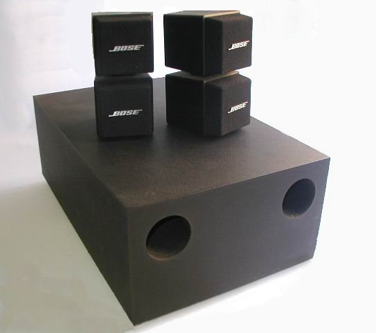

Sound
shearer12345
What is Sound?
{kind=link}
What is Sound?
Pressure waves in a medium
usually in air
Sound for humans
Humans can hear sound with their ears
but only a restricted frequency range
Frequency range of human hearing
~20Hz → ~20,000Hz
Hz = cycles per second
High frequency sensitivity drops off with age
What we use sound for
Detecting contact events
Localization (where things are; direction; distance)
Speed
Kind of room/space
Kind of surfaces
What we use sound for 2
Kind of sound source (e.g. car engine)
Features of sound sound (e.g. speed of car engine)
Music
Speech
What we use sound for 3
Sound directs attention
we don’t have to listen in a direction
unlike vision
We hear all around us
The Sound of music
The Sound of music (very briefly)
Musical notes have a fundamental frequency (\(f_0\))
measured in Hz
we perceive an equal distance between neighbouring notes or octaves
when the actual frequency doubles per octave
Pitch and Frequency
For music, we perceive "pitch" as roughly the logarithm of frequency
For example, from A4 (the 'A' above middle C) to A5 (an octave higher)
The frequency doubles from 440Hz to 880Hz
Frequency Vs Pitch
{kind=link}
Pitch Vs Frequency
{kind=link}
Challenges in Sound 1
Amount of data
Need to change/start sound data quickly (with low latency)
Rate needed to fill buffers (small buffer for low latency)
Storage and compression formats
Real-time processing for effects
Challenges in Sound 2
Real-time processing for effects
Speed of sound
Attenuation
Reflection
Refraction
Effect of ears/head
Challenges in Sound 3
Movement of objects and sound
Doppler effect
Synchronisation of sound with in-game events
Representing sound
Sound (in the real world) is continuous
both in amplitude and in time
Sound is digitally represented by sampling (reducing) those continuous values into discrete values
Sampling

Sample rate
Number of samples per second
The sample rate limits the maximum frequency that can be represented/reproduced correctly (Nyquist–Shannon sampling theorem)
sample rate = 2 x maximum reproducable frequency
Human hearing range = 20Hz-20,000Hz ⇒ audio usually sampled at at least 40,000Hz
common sample rates: 44.1kHz (CD), 48 kHz, 88.2 kHz, or 96 kHz
Sample rate
lower sample rates can be used for some kinds of sounds
especially speech
Sample bit depth
Number of bits per sample
how many different amplitudes can be represented
Typically 8, 16 (CD) or 24-bits per sample
internally frequently represented at 32-bit precision (sometimes floating point) to allow for mixing well
(sounds can have a very large dynamic range - levels from very quiet to very loud)
Channels
Multiple channels of sound can be pre-mixed to provide the aural illusion of multi-directional sound
works well with headphones, sets of speakers
2 channels is most common (for music)
More channels may be pre-mixed for games, films, etc
e.g. 5.1 (5 channels of positional audio, and 1 extra channel for a sub-woofer)
Channels 2
Sound effect audio is usually just mono (single channel)
mixed in real-time to produce multiple channels
to provide for multi-directional sound etc.
.1 sound
Humans can’t detect direction of low frequencies well
Low frequency sound is expensive to generate
need large speakers (generally)
use more power
For positional audio to low frequencies a mixed to a separate special speakers (sub-woofer)
.1 sound (sub-woofer)

Data rate
Uncompressed audio is needed to be in RAM for rapid access
loading and decompression is slow
can use quite a lot of space
Let’s do a worked example
Data rate 2
Let’s assume:
CD quality audio, sample rate = 44,100Hz
CD quality audio, sample depth = 16 bit == 2 bytes
CD quality audio, channels = 2 (stereo)
Data rate 3
⇒ bytes per second = 44,100 x 2 x 2 == 176,400
⇒ bytes per minute = 10,584,000 =~ 10MB per minute
⇒ one CD can hold 74–80 minutes of audio
Sound in Games Programming
Sound is usually accessed through libraries
We’ll use SDL2 (again) for sound
specifically, the SDL extension library SDL2_mixer
SDL audio and SDL2_mixer
The standard SDL2 library has some audio support built in
This is low-level
SDL2_mixer provides a higher level, mixer access to audio
DON’T use both together
Mix_Chunks vs Mix_Music
This is SDL2_mixer’s terminology
AKA: Sound effects vs streaming sound
Many sounds need to be played very tightly aligned (in time) with in-game events
e.g. door slam sound should play exactly when the door slams
sound must be immediately available to play
File-loading and decompression is SLOW
Mix_Chunks vs Mix_Music 2
SDL2_mixer allows many concurrent
Mix_ChunkchannelsSDL2_mixer allows only one concurrent
Mix_Music
SDL2_mixer Channels
SDL2_mixer channels are the channels used internal before mixing
these are different from the number of output channels
we’ll not do any stereo/3D audio here
SDL2_mixer file formats
SDL2_mixer can load sound in a variety of formats, both compressed and uncompressed
WAVE, AIFF, RIFF, OGG, MP3 and VOC
SDL2_mixer issues
File loading can lead to errors, whether due to bad files, non-compliant files, library bugs, or inaccessible paths
SDL2_mixer is a bit fussy
silent fails
errors raised (error codes)
library crashes
Workshop activities 1
Add SDL2_mixer to your project
add the
#includecheck that
premake5.luais setup for SDL2_mixersdl2template is setup for this already
Make sure your program stills builds
We’re roughly following a Lazyfoo tutorial - http://lazyfoo.net/tutorials/SDL/21_sound_effects_and_music/index.php
Workshop activities 2
Find the SDL2_mixer documentation
I recommend the "One page (HTML)"
Workshop activities 3
Add a variable for a pointer to a
Mix_MusicAdd variables for pointers to
Mix_Chunk(for multiple sound effects)we could use
unique_ptrorshared_ptrdo be safer
Make sure SDL initialises audio
the call to
SDL_Initshould includeSDL_INIT_AUDIOor be everything
Workshop activities 4
Open a mixer with
Mix_OpenAudiolook up the parameters and set them appropriately
check for errors
Workshop activities 5
Find some audio files you can use
you could test with system sounds
get a music file and some sound effects
Workshop activities 6
Add code using
Mix_LoadMUSto load a music filemake sure to error check
compile and make sure it doesn’t error
add code to free the music pointer when your program exits
Workshop activities 7
Add code to start the music on a key press
using
Mix_PlayMusictest this
Add code to test if music is playing/paused/not-playing and to play/pause/stop on keypresses
using
Mix_PlayingMusic(),Mix_PauseMusic,Mix_ResumeMusic()andMix_HaltMusic()
Workshop activities 8
Load a sound effect using
Mix_LoadWAVcheck for errors
add code to clean up
Workshop activities 9
Make the sound effect play on a key press
using
Mix_PlayChannel()check the documentation to understand the parameters
Create a SoundEffect and Music classes
To support the repetitive activities above